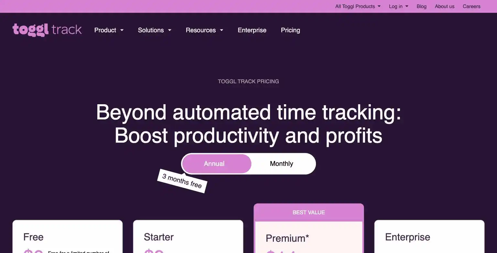
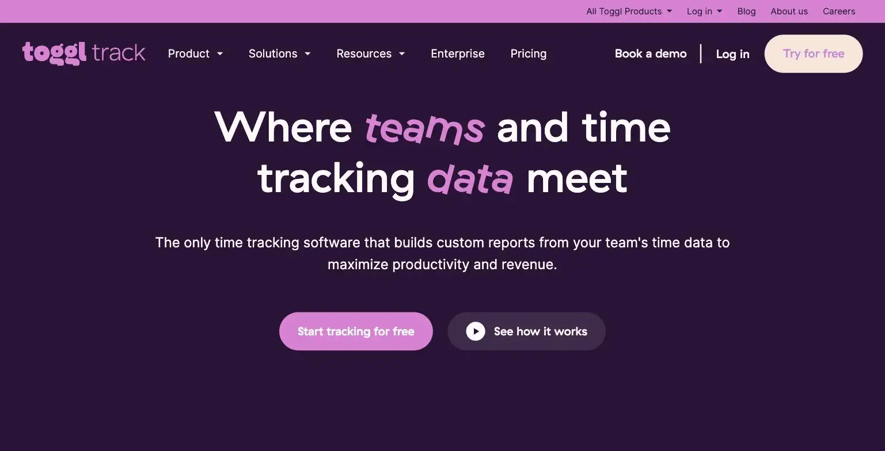

Toggl Track
It would not lie about how many hours were actually worked today. Nobody had asked it to.
Toggl Track is a time tracking tool with AI-assisted categorization, useful if you bill hourly or just want visibility into where the day actually goes. The free plan covers up to 5 users at no cost, more generous than almost anything else on this list, with Starter at $9/user/month (billed annually) and Premium at $18/user/month adding reporting and approvals. The site's verdict is a solo operator billing hourly clients rarely needs to leave the free plan.
Toggl Track will not lie to you about how many hours you actually worked today, which is either exactly what you need or something you'd rather not know. It's free for up to 5 users, so the accountability comes at no extra charge.
- Value for price8/10
- Capability6/10
- Ease of use8.5/10
- Trial safety8.5/10

Toggl Track's core interface is a one-click timer with project and client tagging, and the AI-assisted categorization layer suggests which project a given time entry likely belongs to based on your past patterns, cutting down the manual tagging that makes most time trackers tedious to actually use daily.

Toggl Track's free plan supports up to 5 users at no cost, a rarity among time trackers, which makes it viable for a solopreneur who occasionally brings on a contractor or VA without immediately forcing a paid upgrade.
Example from toggl.com. Not independently tested by Solos Gems.Pricing breakdown
- Free: Up to 5 users, unlimited time tracking, basic reporting, unlimited projects and clients
- Starter ($9/user/mo billed annually, $11.35/mo monthly): Adds billable rates, time rounding, and project templates
- Premium ($18/user/mo billed annually, $22.70/mo monthly): Adds advanced reporting, time approvals, and profitability tracking
- Enterprise: Custom pricing for larger teams with dedicated support
When the free plan actually runs out
A solo operator tracking billable hours for a handful of clients will rarely outgrow Toggl Track's free plan, the core timer, tagging, and basic reporting cover the whole workflow. The upgrade to Starter makes sense once you need billable-rate calculations built into your reports rather than doing that math yourself, and Premium only matters once you're managing a small team's time and need approval workflows, which is a team problem, not a solo one.
Pros
- Free plan supports up to 5 users, unusually generous for the category
- One-click timer with minimal friction, actually gets used daily unlike heavier tools
- AI categorization reduces the manual tagging tax that kills most time-tracking habits
Cons
- Free plan's reporting is basic, no billable-rate math built in without upgrading
- AI categorization suggestions need review, not perfectly accurate out of the box
- Per-user pricing on paid tiers adds up if you bring on multiple contractors
Common questions
Is Toggl Track's free plan enough for a solo operator?
Almost always, yes. Solo operators rarely need to leave the free plan, which covers up to 5 users, only upgrade once you specifically need advanced reporting or team-level approval workflows.
Does the free plan handle billable-rate calculations?
Not built-in, no. Free plan reporting is basic without billable-rate math, if you need automatic revenue calculations from tracked time, that requires a paid tier.
Can I trust Toggl's AI time-categorization?
Review it, don't trust it blindly. AI categorization suggestions need review, they're not perfectly accurate out of the box, treat them as a time-saving starting point rather than a final record.